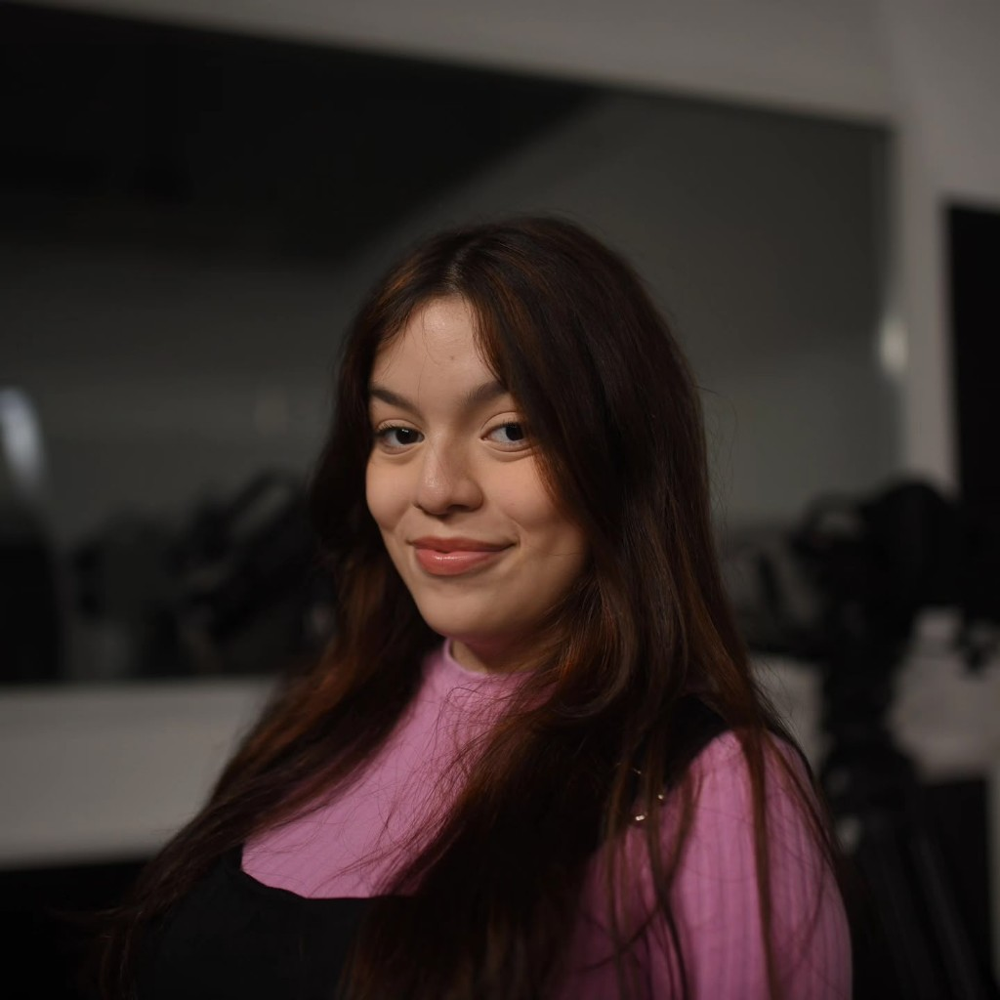

Sobre mí
Alejandra Lemus Camacho
Realizadora audiovisual y comunicadora
Estudiante de Comunicación Social y Medios Digitales. Uso la fotografía, la cámara y el guion para convertir una mirada en una historia que conecte con quien la ve. En una producción me muevo entre presentación, escritura y operación de cámara, con disciplina para cuidar el detalle y seguir cuando una toma no sale. Busco cine, series, documentales y comunicación deportiva donde el rigor se note en la imagen y en el relato.
Software
Edición, color y diseño
Programas por confirmar
Hardware y producción
Manejo de cámara
Fotografía
Grabación
Redacción de guiones
Presentación
El PDF todavía no está en el sitio.

Muestra